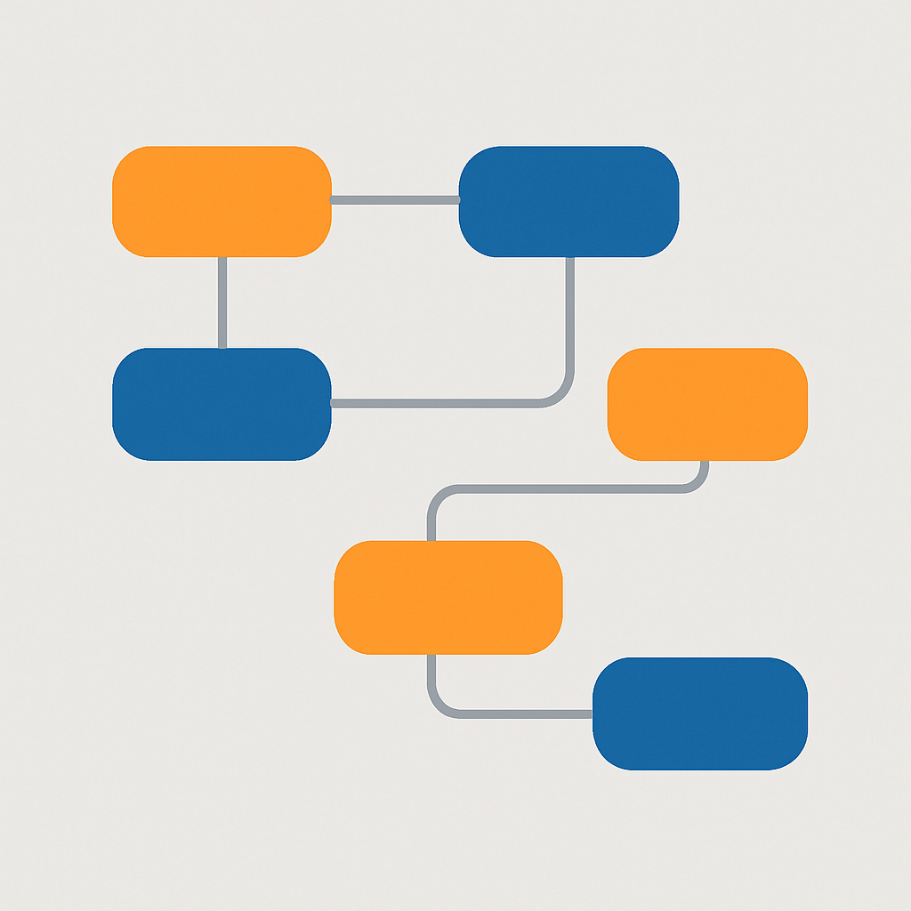
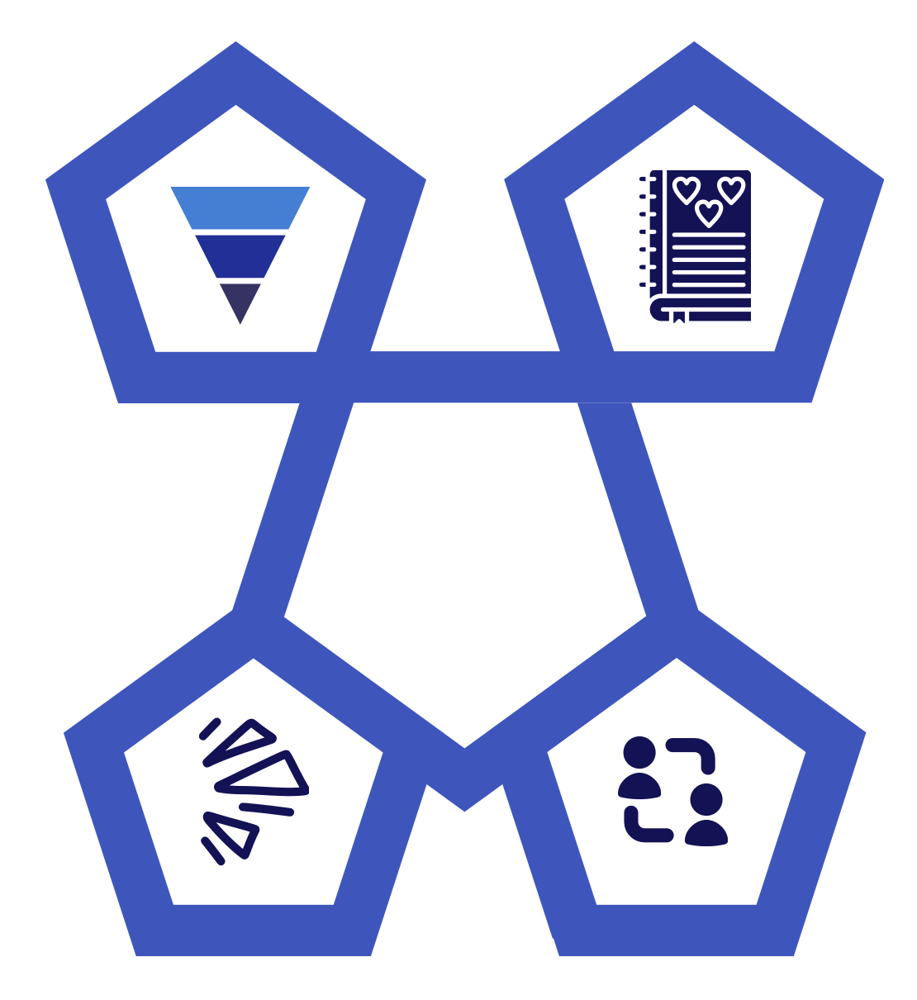

- Campaign introduction and context
- My role and campaign objectives
- Approach and funnel strategy
- Roadblocks, challenges, and solutions
- Key deliverables
- Key insights and learnings
- Top takeaways and next steps
Inclusive Tomorrow · Spring Multi-Channel Campaign
A multi-channel marketing campaign concept for Inclusive Tomorrow, focused on driving raffle ticket sales while promoting inclusive change. This project connects social media, podcasts, influencers, email, and display ads into one aligned funnel from awareness to conversion.
Overview of the main sections covered in this campaign reflection.

Understanding the spring campaign and what it set out to achieve.
This project was a multi-channel marketing campaign for Inclusive Tomorrow, a non-profit focused on inclusive change. The specific goal of the spring campaign was to increase raffle ticket sales while keeping the organisation’s mission front and centre.
The campaign used several channels — social media, podcast guest spots, influencer collaborations, email, and display ads — all coordinated to support the same message and call to action.
What I was responsible for and how success was defined.

How the campaign structure guided audiences from awareness to conversion.

What did not go smoothly and how I responded.
The core documents that structured and supported the campaign.
What this campaign taught me about multi-channel marketing.
How I plan to build on this experience in future campaigns.
Interested in similar work for your organisation? Get in touch.
This reflection is part of my broader portfolio of digital marketing and campaign projects. If you would like to discuss how a similar funnel-based, multi-channel approach could support your organisation, feel free to reach out via the contact section on the main site.